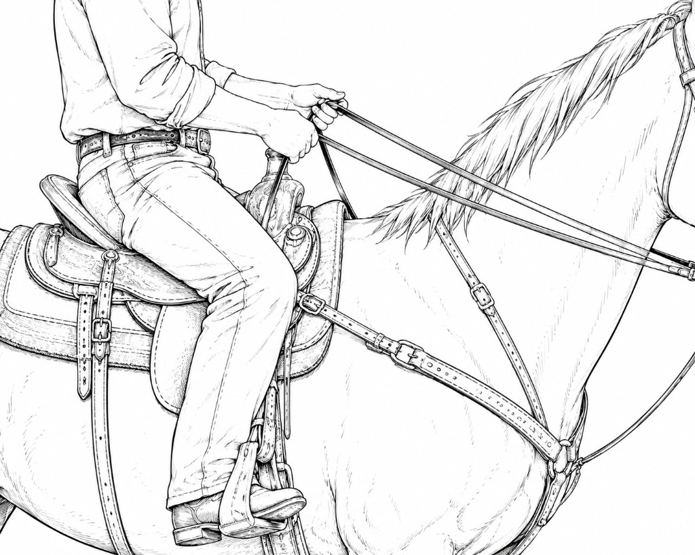
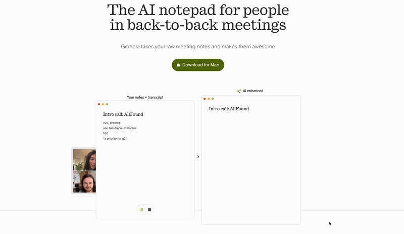
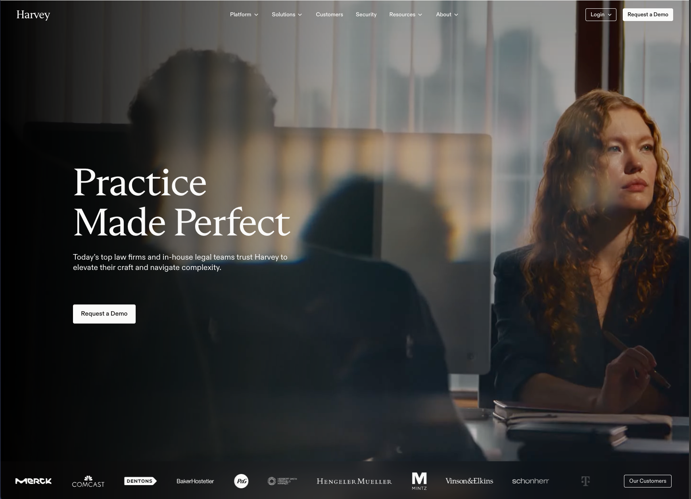
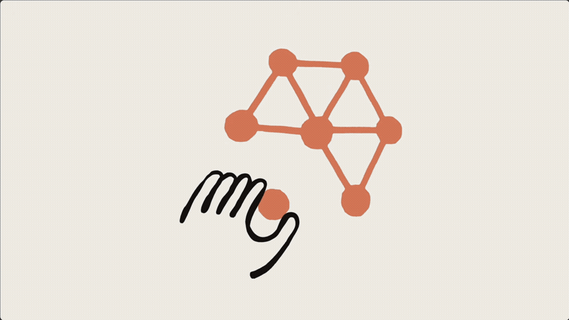
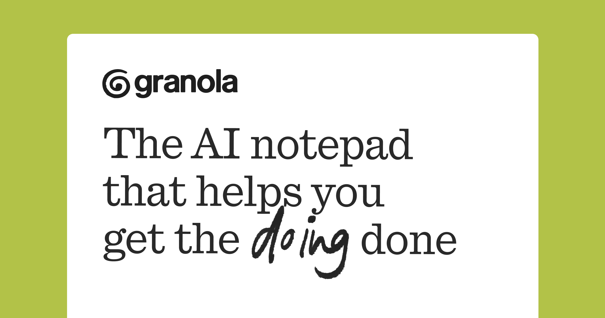

Agentic
Harness
Engineering
Workshop overview & takeaways
Speak harness anatomy fluently.
System prompt, skills, tools, rules, hooks, knowledge, memory — what each does, where it lives on disk, and how product teams ship them.
Reverse-engineer before you prompt.
Trace Harvey, Claude for Financial Services, or Granola through the same six slots; carry that lens into every AI surface you design.
Leave with a real folder.
Five breakouts → five artifacts in your template project (prompt, skill, tool spec, hooks/rules wiring, knowledge + memory notes).
Why this workshop matters
From static wireframes to dynamic orchestration rules.
Designers now shape how agents coordinate — not just how screens look.
The model is the intelligence. The harness makes it useful.
Same model, up to 6× the performance — on harness design alone (Stanford research). Designers shape those decisions.
OpenAI built a million-line product where humans steer and agents execute.
The discipline moved to the scaffolding.
Two days, one productized app
Two days, one productized app
Your environment & ground rules
- VS Code — your editor
- Pick one extension: GitHub Copilot or Roo Code / DevGPT — each gives you the brain (LLM), the chat interface, and the harness folder it reads.
- Harness lives in the editor's folder —
.github/for Copilot,.roo/for Roo Code; both readAGENTS.md. - Optional: MCP servers (e.g. GitHub) via
.vscode/mcp.jsonor.roo/mcp.json
- The harness — markdown, JSON, scripts
- A frontend prototype — generated in your VS Code project with Copilot or RooCode from that brief.
- An eval set — a test prompt per component whose output is the artifact the harness generates consistently
- A demo script — one task you'll run live, producing that artifact
Before Day 1 breakouts: Install VS Code, enable one AI extension (GitHub Copilot or Roo Code / DevGPT), then download and unzip the app build template and open it as the workspace. Run the model-access smoke test in SETUP.md first — the tests fail by design if the model never runs. The harness is pre-wired into .github/ (Copilot) and .roo/ (Roo); Day 1 follows the lab cards in labs/, Day 2 runs /plan-app → /bootstrap-harness → /test-harness, and PROGRESS.md tracks you. Optional deeper reference: harness-templates/ and the starter pack.
Foundations
What "harness" means here—and why it matters to design work.
What is a harness?

The model has the power.
Raw intelligence — fast, capable, untrained on your task. Powerful enough to throw a rider.
The harness makes it ridable.
A seat to sit on, stirrups to steer, a girth to hold the work in place. Not the power — the leverage.
The user gives direction.
Without the saddle, the user is on the ground. With it, they go where they meant to go.
The core formula
The emergent behavior
Goal-directed, tool-using, self-correcting entity the user experiences.
The intelligence
Takes in text and images, outputs text. That's it.
Everything else
Code, config, tools, constraints that make the model useful.
What models can't do out of the box
The Anatomy
Six harness pieces you'll recognize later—then where they live in files and editors, two shipped examples, and your breakout pick.
The harness is mostly files
my-app-harness/ ├── AGENTS.md # project context, conventions, rules — read by Copilot & RooCode ├── .github/ │ ├── copilot-instructions.md # Copilot repo-wide instructions │ ├── instructions/ │ │ ├── frontend.instructions.md # path-scoped instructions (applyTo: glob) │ │ └── backend.instructions.md │ ├── prompts/ │ │ ├── plan.prompt.md # reusable /plan prompt │ │ └── ship.prompt.md # reusable /ship prompt │ ├── agents/ │ │ ├── researcher.md # custom Copilot agent │ │ └── reviewer.md │ └── hooks/ │ ├── pre-tool-use.sh # gate dangerous calls (cloud agent) │ └── post-tool-use.sh # auto-format, lint, log ├── .roo/ │ ├── rules/01-design.md # RooCode workspace rules │ └── rules-{mode}/ # per-mode rules └── mcp.json # external tool servers (MCP)
CLAUDE.md / AGENTS.md
The system prompt you actually own
Highest leverage. Keep under 200 lines. Survives compaction.
.claude/settings.json
Permissions & hook bindings
Allow / deny tools, env vars, which scripts run on which events.
.claude/skills/*.md
Reusable, discoverable prompts
Loaded only when relevant — progressive disclosure.
.claude/hooks/*.sh
Deterministic guardrails
Every time the model touches X, this script runs. No "the model might forget."
mcp.json
External tool servers
GitHub, browser, Confluence (examples — setup required)
Six core harness components
System prompt
Meta vs template framing · identity & structure → write yours.
Skills
What / anatomy / example → design one skill.
Tools
Functions · scripts · MCP · descriptions → define one.
Rules & hooks
Policy lists + deterministic gates → pair allow/deny with a pre-tool hook.
Knowledge
Stable domain context → capture one schema or dictionary file.
Memory
Session-scratch & volatile state → what changes every few turns, not quarterly.
What's inside a system prompt
- 01 System prompt
- 02 Skills
- 03 Tools
- 04 Rules & hooks
- 05 Knowledge
- 06 Memory
AGENTS.md — full file
Lives in
sample-harness-uxd-specs/
├── AGENTS.md
├── README.md
├── prompts/
├── rules/
├── tools/
├── hooks/
├── scripts/
├── mcp/
├── knowledge/
└── specs/
└── templates/
# AGENTS.md — Spec Steward > Read `prompts/system-prompt.md` first. This file lists the agent's > capabilities, tools, and the never/always rules in a form that any harness > (GitHub Copilot, Cline, RooCode) can pick up. ## Identity **Name:** Spec Steward **Purpose:** Keep the UXD spec library coherent — author, validate, and transition spec documents under `specs/`. **Audience:** UX designers, design leads, product managers. ## Capabilities - Scaffold a new spec from a type-specific template (`ux-flow`, `component`, `research`, `prd`) with a freshly-allocated `SPEC-YYYY-NNN` ID. - Validate a spec's frontmatter schema, required sections, and link integrity (internal SPEC IDs, optional `design_reference` URLs, design system component names). - List specs in the library filtered by `status`, `type`, `owner`, or free-text match against title. - Transition a spec through the workflow (`draft → in-review → approved → implemented → archived`) with status-specific preconditions enforced. - Find orphaned specs: approved or implemented specs with no inbound links, or drafts older than 90 days with no owner activity. ## Tools | Tool | When to use | When NOT to use | | ------------------- | ---------------------------------------------------------- | ---------------------------------------- | | `create_spec` | User asks to start a new spec or revise an approved one | User wants to edit an existing draft | | `validate_spec` | Before any status transition, before saving an in-review | Casual reads — use `Read` instead | | `list_specs` | "What specs are in review?" / "Find specs owned by Jane" | Looking up a known SPEC ID — use `Read` | | `transition_status` | Moving a spec between workflow states | Editing content | | `find_orphans` | Periodic library audit, weekly review prep | Looking for one specific spec | Tool definitions live in `tools/*.json`. Backing implementations live in `scripts/*.sh`. ## Always do - Run `validate_spec` before any `transition_status` call. - Update the `updated:` frontmatter field on every edit (the `post-tool-use.sh` hook handles this automatically; do not write the timestamp by hand). - Refer to design system components by their exact name from `knowledge/design-system-index.md`. ## Never do - Edit a spec with `status: approved` or `status: implemented` in place. Create a revision via `create_spec --revise <id>`. - Write files outside `specs/`. The `pre-tool-use.sh` hook blocks this. - Reassign a `SPEC-YYYY-NNN` ID. IDs are immutable once allocated. - Send updates to Jira without explicit user confirmation, even when the MCP server is connected. ## Context & memory - **Persistent context the agent always reads:** `knowledge/spec-schema.md`, `knowledge/workflow.md`, `knowledge/design-system-index.md`. - **Session notes** live in `notes/SESSION.md` (gitignored). Use for cross-turn working memory only — never for secrets or PII. - **Spec data** is the filesystem under `specs/`. There is no separate database. ## Escalation Escalate to the user (stop and ask) when: - Two consecutive tool calls fail for the same reason. - A spec change would touch more than 3 other specs (cascading edits). - The user asks to delete a spec — archival is the supported path; deletion requires explicit override. - Validation surfaces a conflict between two specs that disagree on shared fields (e.g. both claim to own the same component). ## Out of scope (refuse politely) - Writing production application code, producing raw UI mocks in other tools, or sending messages. - Touching files outside `specs/`, `knowledge/`, or `notes/`. - Estimating engineering effort or assigning tickets — link to Jira, don't create.
What's inside a skill
- 01System prompt
- 02Skills
- 03Tools
- 04Rules & hooks
- 05Knowledge
- 06Memory
Real-world example · Agent Skills spec
SKILL.md — directory, not a single file
Lives in
my-harness/
└── .claude/
└── skills/
└── design-review/
├── SKILL.md
├── scripts/
│ └── a11y.sh
├── references/
│ └── tokens.md
└── assets/
└── pr-tmpl.md
--- name: design-review description: Review a UI mock, component, or design hand-off. Use when the user asks to "review", "critique", or "give feedback on" a UI — flags token violations, WCAG AA gaps, and specific fixes with file:line references. allowed-tools: Read Grep Bash(./scripts/a11y.sh *) --- # Design Review Run a structured critique against project tokens and a11y baseline. ## Steps 1. Identify token violations (color, spacing, typography). 2. Run `./scripts/a11y.sh` for WCAG AA contrast checks. 3. List 3 specific changes with file:line references. 4. Render using assets/pr-tmpl.md. ## Additional resources - Token rules → references/tokens.md - A11y baseline → references/a11y.md - PR template → assets/pr-tmpl.md
What's inside a tool description
- 01System prompt
- 02Skills
- 03Tools
- 04Rules & hooks
- 05Knowledge
- 06Memory
Real-world example · tool descriptor
validate_spec — tool descriptor
Lives in
my-harness/ ├── tools/ │ └── validate_spec.json ├── scripts/ │ └── validate_spec.sh └── mcp.json # MCP servers
{
"name": "validate_spec",
"description": "Validate a spec file against the schema in
knowledge/spec-schema.md. Use this when the user asks to
check, lint, or verify a SPEC-*.md file. DO NOT use this
on prose docs, README, or files outside /specs.",
"input_schema": {
"type": "object",
"properties": {
"spec_path": {
"type": "string",
"description": "Repo-relative path, e.g. specs/SPEC-2026-001.md"
}
},
"required": ["spec_path"]
},
"exec": "scripts/validate_spec.sh ${spec_path}"
}
What's inside a rules file
- 01System prompt
- 02Skills
- 03Tools
- 05Knowledge
- 06Memory
Real-world example · Claude Code policy
settings.json — allow / deny / ask
Lives in
my-harness/ ├── .claude/ │ └── settings.json ├── AGENTS.md # soft rules └── .roo/ └── rules/ └── 01-rules.md
{
"permissions": {
"allow": [
"Bash(npm test:*)",
"Bash(pnpm lint:*)",
"Read(./src/**)"
],
"deny": [
"Bash(rm -rf:*)",
"Bash(git push --force:*)",
"Read(./.env*)"
],
"ask": [
"Bash(gh pr merge:*)",
"Write(./infra/**)"
]
},
"hooks": {
"PreToolUse": ".claude/hooks/pre-tool-use.sh"
}
}
What's inside a hook
- 01System prompt
- 02Skills
- 03Tools
- 05Knowledge
- 06Memory
Real-world example · pre-tool-use hook
pre-tool-use.sh — block writes outside /specs
Lives in
my-harness/
└── .claude/
└── hooks/
├── pre-tool-use.sh
├── post-tool-use.sh
└── session-start.sh
#!/usr/bin/env bash set -euo pipefail # Hook input arrives as JSON on stdin input=$(cat) tool=$(jq -r '.tool_name' <<<"$input") path=$(jq -r '.tool_input.file_path // empty' <<<"$input") if [[ "$tool" == "Write" || "$tool" == "Edit" ]]; then if [[ -n "$path" && "$path" != specs/* ]]; then echo "{\"decision\": \"block\", \"reason\": \"Writes restricted to /specs.\"}" exit 0 fi fi echo "{\"decision\": \"approve\"}" # Exit 0 = decision honored. Non-zero exit = hook error, # the harness logs and falls back to default policy.
What's inside a knowledge file
- 01System prompt
- 02Skills
- 03Tools
- 04Rules & hooks
- 05Knowledge
- 06Memory
Real-world example · spec schema
spec-schema.md — domain knowledge
Lives in
my-harness/ ├── knowledge/ │ ├── spec-schema.md │ ├── style-guide.md │ └── README.md └── specs/ └── SPEC-2026-001.md
--- title: SPEC file schema applies_to: specs/SPEC-*.md last_reviewed: 2026-04-01 --- # SPEC file schema A SPEC file MUST contain the following sections, in order: | Section | Required | Notes | |---------------|----------|----------------------------------| | Frontmatter | yes | id, title, owner, status | | Problem | yes | one paragraph, no jargon | | Acceptance | yes | numbered, observable, testable | | Out of scope | yes | enumerate what this SPEC does not do | ## Citation rule When the agent cites this schema in a reply, quote the row verbatim from the table — never paraphrase the "Required" column. # Volatile state does NOT belong here: # - current session notes → memory/SESSION.md # - credentials → .env (gitignored) # - team preferences → AGENTS.md
What's inside a session memory file
- 01System prompt
- 02Skills
- 03Tools
- 04Rules & hooks
- 05Knowledge
- 06Memory
Real-world example · session scratchpad
memory/SESSION.md — volatile working tier
Lives in
my-harness/ ├── memory/ │ ├── SESSION.md │ └── ARCHIVE/ ├── knowledge/ # slow tier └── .env # secrets
# memory/SESSION.md # ephemeral — prune per session / git-ignore per repo policy ## Working set (this hour) - Land SPEC-2026-004 deltas before Thurs stand-up. - User insists on British spelling for customer-visible strings. ## Scratch decisions - Leaving status="draft" until Legal signs section 4. # If a bullet survives multiple releases → promote into knowledge/. # Credentials never live here — use .env or your secret manager.
When a harness becomes a product

-
Persona & rules
Domain-specific assistant
Purpose-built for legal — privilege, citations, jurisdictional grounding baked into the system prompt.
↳ system prompt -
Tools
Vault · Knowledge · Workflow Agents
Document store, legal/regulatory/tax retrieval, and pre-built agents for litigation, transactional, in-house.
↳ tools + skills -
Memory & retrieval
Source-grounded answers
Vault is the knowledge base; every output cited back to documents the firm trusts.
↳ knowledge base + RAG -
Orchestration
Specialized agents end-to-end
Distinct workflow agents per practice area; firms build their own within bounds.
↳ subagents + handoffs -
Hooks & governance
Privacy & security gates
Privilege protection, audit trails, deterministic guardrails the model can't bypass.
↳ hooks + middleware -
Integrations
Ecosystem layer
Plugs into the firm's existing workflows — DMS, mobile capture, collaboration spaces.
↳ MCP-style connectors
Granola — meeting-native harness

-
Persona & rules
Neutral chronicler
Tone calibrated for notes stakeholders share — avoids hallucinating commitments; surfaces uncertainty explicitly.
↳ system prompt + rules -
Tools
Calendar · CRM · docs
Writes structured recap blocks and action items into the systems teams already use.
↳ tools + integrations -
Skills
Templates per meeting type
Standups vs sales calls vs interviews → different summarization rubrics loaded on demand.
↳ skills -
Memory & retrieval
Episode memory
Links today's decisions to prior meetings without stuffing everything into one mega prompt.
↳ knowledge base + recall -
Hooks & governance
Consent & retention
Recording gates, delete/export paths, org policies enforced before audio touches cloud speech APIs.
↳ hooks + middleware -
Orchestration
Realtime → async cleanup
Streaming capture followed by chained refinement passes once the meeting ends.
↳ skill chains + loops
Pick one app to reverse-engineer
Harvey
Legal AI platform for law firms. Research, drafting, document analysis, conversational queries over a firm's knowledge.

Claude Financial Services
Vertical Claude for banking, insurance, asset management, and fintech — verification-first outputs, native in Excel and PowerPoint, agent templates for modeling and reporting workflows.

Granola
AI notepad for back-to-back meetings. Listens, drafts notes, extracts actions, syncs to your tools.

One component at a time
Five sequenced breakouts map to real files: system prompt → skills → tools → hooks/rules → knowledge/memory. Meta-vs-template and skill-chain slides close the loop after you've touched every lever.
Open the breakout page for each component
System prompt
Draft AGENTS.md with the five-section anatomy: identity, scope, hard rules, tool roster, failure modes.
Skills
Author a SKILL.md directory — frontmatter trigger + body + bundled scripts/ · references/ · assets/.
Tools
Write a script-as-tool descriptor with WHAT / WHEN / WHEN-NOT, an input schema, and an executable stub.
/draft-tool breakouts/component-3-tools.htmlRules & Hooks
Pair settings.json allow / deny / ask with a pre-tool-use.sh hook that enforces it every time.
Knowledge & Memory
Write one durable knowledge file plus a session memory scaffold — and learn what stays where.
/draft-knowledge breakouts/component-5-knowledge-memory.htmlLong-running agentic workflows
Meta rails
AGENTS.md / CLAUDE.md pins identity, hard rules, and the tool roster across every lap of the workflow.
Skill swaps
Each milestone loads its own SKILL — triage versus drafting versus verification — keeping context light between phases.
Deterministic fences
Hooks inspect tool calls between stages — block, escalate, or log so the outer loop stays boringly predictable.
Artifacts
knowledge/ for stable schemas; scratch + decisions in session memory files until promoted or discarded.
Workshop example — SPEC‑2026 from brief to merge
Human brief + backlog signal
- PM uploads Notion excerpt + Teams thread excerpt.
- Skill
intake-briefnormalizes bullets intomemory/SESSION.md. - Human gate: PM confirms Problem statement before drafting starts.
Author SPEC skeleton
- Skill
spec-authorfills sections from scratch template. - Tools
Read/Edit+validate_specpinned to schema. - Knowledge cites
spec-schema.mdverbatim for required rows.
Crit loop with tokens
- Skill
design-reviewagainst design-system tables. - Violations surfaced as Markdown checklist attachments.
- Human gate: UX lead rejects or ACKs severity threshold.
Harden wording + tooling
- Hooks
PreToolUseblocks merges without passingvalidate_spec. - Tools call internal doc search + MCP link grabber.
- Outputs routed to changelog + SOC evidence packet stubs.
Open PR · capture eval cases
- Agent opens GH PR with recap + lingering risks.
- Working notes promoted to
knowledge/workflows/spec-to-ship.md. - Failure transcripts logged as regressions before next SPEC.
Read left → right for calendar order; laps can repeat when human gates reopen an earlier stage.
Same pipeline — who's moving the state?
block / approve JSON
flowchart TD
subgraph LOOP["SPEC → ship macro loop"]
A["Brief accepted"] --> B["AUTO · Draft
SKILL"]
B --> C{"validate_spec
PASS?"}
C -->|"no"| B
C -->|"yes"| D["AUTO · Crit
SKILL"]
D --> E{"Hook + human
DESIGN OK?"}
E -->|"rework"| B
E -->|"yes"| F["AUTO · MCP
evidence pull"]
F --> G{"PreTool hook
allows PR?"}
G -->|"block"| H["Escalate to
human Teams"]
H --> F
G -->|"approve"| I["SHIP · PR
merged"]
I --> J["Promote playbook + queue
eval cases"]
end
style C fill:#e8e8e8,stroke:#71717a,color:#18181b
style E fill:#ffffff,stroke:#71717a,color:#18181b
style G fill:#c4c4c4,stroke:#525252,color:#18181b
Meta prompts · the agent's frame
Template prompts · the agent's turn
Wire your harness into GitHub Copilot or Cline / RooCode
Drop your harness/ folder into a fresh project
Copilot reads AGENTS.md and .github/copilot-instructions.md. RooCode / Cline read AGENTS.md and .roo/rules/. Move/symlink as needed.
Run a real task — the one you reverse-engineered
Drop a real artifact in the workspace and ask the agent to handle it. Harvey: a sample contract — flag risks. Claude Financial Services: a small workbook or diligence slide outline — trace numbers, cite sources, flag what needs human sign-off. Granola: a transcript — produce the brief. Same intent as the live product, your harness.
Watch where it diverges from the original product
Tool descriptions too vague? Hook too aggressive? System prompt missing a constraint? Take notes — don't fix yet.
Make ONE high-leverage change, re-run
Edit a tool description, tighten the system prompt, or add one hook. Compare before / after.
What to capture for the demo
before.txtThe transcript before your change.after.txtThe transcript after your one change.diff.mdWhat you changed and why · 3 bullets max.tradeoffWhat got worse so something else could get better.Show your harness
5 minutes per group. Run the agent live, walk through the file tree, defend one tradeoff.
Flow & listening
Keep this slide up during demos — presenters follow the checklist; everyone else listens for the signals on the right.
5-minute demo flow
What we're listening for
How we'll judge the demos
Best practices & anti-patterns
Best practices we want to see
- Start with user intent · design the failure state first
- Cap tools at ~7 · description = UX copy for the model
- Hooks for "every time"; prompts for "use judgment"
- One file does one job · AGENTS.md stays under 200 lines
- Capture transcripts as evals · hill-climb from real failures
Anti-patterns we'll call out
- "And here are 23 MCP servers it can use" — too many tools
- The system prompt is doing the hook's job
- No way to tell when the agent succeeded vs. gave up
- Same harness for every user — no scoping at all
- Demo runs only on the rehearsed task
Your harness engineering toolkit
Agent = Model + Harness.
You're always designing the harness, even if you don't call it that.
The harness is mostly files.
Markdown for instructions · JSON for config · scripts for hooks. Same pattern across every product.
Write tool descriptions like UX copy.
They're the interface between the agent and its capabilities — the highest-leverage micro-copy you'll write all year.
Hooks > hoping the model remembers.
Anything that should happen "every time" lives in code, not a prompt. Mitchell Hashimoto: change the system so a whole class of mistake can't come back — don't just re-run the prompt and hope.
Most agent failures are input failures.
Read 5 transcripts before you change a single line of the system prompt.
Read these next
The Anatomy of an Agent Harness
Vivek Trivedy's framing of harness components — "if you're not the model, you're the harness."
Agentic Harness for Real-World Compilers
arXiv:2603.20075 — llvm-autofix as the first agentic harness for compiler bugs. Worked anatomy example.
Model Context Protocol (MCP)
How to expose external tools — GitHub, Jira, your design-system API — to any harness.
My AI Adoption Journey
Mitchell Hashimoto's post that named the practice: every time the agent errs, change the system so that class of mistake can't recur.
Meta-Harness: End-to-End Optimization of Model Harnesses
Stanford IRIS Lab — searches harness code around a fixed model; the empirical case that the scaffold, not just the weights, drives results.
Custom instructions in VS Code
Repo-wide .github/copilot-instructions.md plus path-scoped *.instructions.md with applyTo. Both are read by Copilot on every turn.
Repository custom instructions (GitHub Docs)
The official reference for .github/copilot-instructions.md, including how it composes with personal and org instructions.
Prompt files (.prompt.md)
Reusable, slash-invokable prompts in .github/prompts/. Treat each one like a /slash command participants invoke from Copilot Chat.
Custom agents (cloud + CLI)
Define agent profiles in .github/agents/<name>.md with YAML front-matter. Copilot's coding agent loads them on demand.
Customize AI in VS Code (overview)
Top-level map of every Copilot customization surface: instructions, prompt files, chat modes, MCP, model selection.
Custom modes
Workspace modes via .roomodes and global modes in settings/custom_modes.yaml.
Custom instructions & rules
How .roo/rules/ and .roo/rules-{mode}/ compose, plus user-global ~/.roo/rules/.
Prompt structure (advanced)
The order in which RooCode assembles the system prompt — useful when you're fighting precedence between rule files.